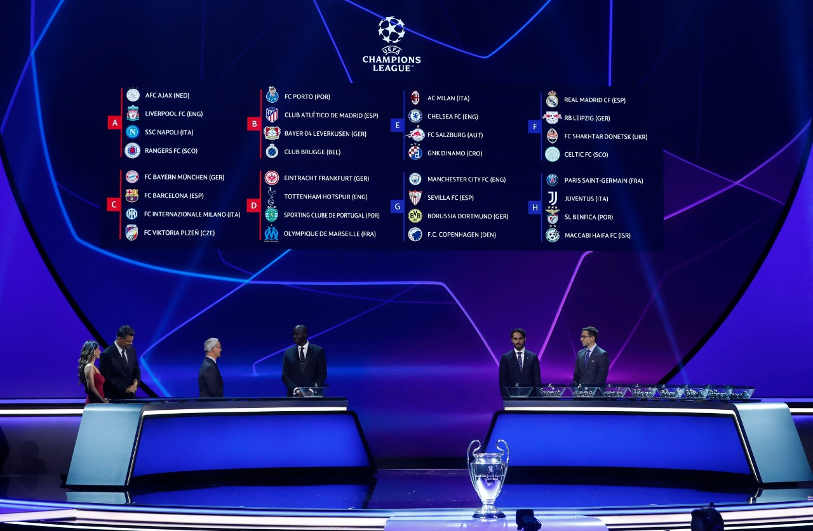

História
A Liga dos Campeões da UEFA, comumente conhecida como Champions League,
é uma competição de clubes de futebol europeus organizada pela UEFA. Ela
foi estabelecida em 1955 como a Taça dos Clubes Campeões Europeus e foi
renomeada como Liga dos Campeões da UEFA em 1992.
A competição começou com a participação de apenas 16 equipes,
representando os principais campeonatos nacionais europeus. Ao longo dos
anos, o formato foi alterado para incluir mais equipes e permitir a
entrada de clubes que não necessariamente venceram suas ligas
nacionais.
A primeira edição da Liga dos Campeões ocorreu na temporada 1955-1956.
O Real Madrid, da Espanha, sagrou-se campeão ao derrotar o Stade de
Reims, da França, por 4 a 3 na final. O Real Madrid se tornou a equipe
mais bem-sucedida na história da competição, conquistando o título nas
primeiras cinco edições, de 1956 a 1960.
Ao longo dos anos, muitos clubes europeus consagrados deixaram sua
marca na Liga dos Campeões. O AC Milan, da Itália, venceu a competição
sete vezes, incluindo uma sequência de títulos entre 1989 e 1990. O
Liverpool, da Inglaterra, conquistou o título seis vezes, enquanto o
Bayern de Munique, da Alemanha, ganhou a competição seis vezes.
Desde a temporada 1992-1993, a Liga dos Campeões da UEFA adotou um novo
formato com uma fase de grupos seguida por rodadas eliminatórias. Os
clubes vencedores de suas respectivas ligas nacionais têm acesso
garantido à competição, enquanto os clubes de ligas mais fracas passam
por fases de qualificação para tentar garantir uma vaga na fase de
grupos.

Cada temporada da Liga dos Campeões começa com uma fase de grupos, em
que os clubes são divididos em grupos e jogam partidas de ida e volta
contra os outros times do grupo. Os dois melhores colocados de cada
grupo avançam para a fase de mata-mata, que inclui oitavas de final,
quartas de final, semifinais e a grande final.
A final da Liga dos Campeões é um dos eventos mais assistidos e
prestigiados do futebol mundial. Ela geralmente ocorre em um estádio
neutro e atrai a atenção de milhões de espectadores em todo o mundo. A
equipe vencedora da final é coroada como campeã europeia e recebe o
troféu da Liga dos Campeões.
Ao longo dos anos, várias finais memoráveis foram disputadas, com
momentos icônicos que ficaram gravados na história do futebol. Alguns
exemplos notáveis incluem a "Final dos Sonhos" de 1999, em que o
Manchester United conquistou o título com dois gols nos acréscimos
contra o Bayern de Munique, e a final de 2005, na qual o Liverpool
reverteu um placar de 3 a 0 no intervalo para vencer o AC Milan nos
pênaltis.